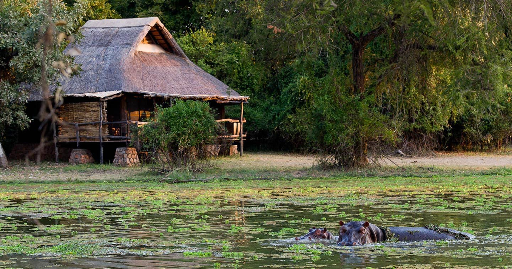

Mfuwe Lodge, South Luangwa
Immerse yourself in the wild heart of South Luangwa. Mfuwe Lodge combines comfort with sustainability, supporting local communities and conservation efforts while offering unforgettable wildlife encounters.
Kasanka National Park
Home to Africa’s largest bat migration and abundant birdlife, Kasanka showcases Zambia’s dedication to community-led conservation and responsible eco-tourism.
The Royal Livingstone
Experience luxury in harmony with nature. Set along the Zambezi River near Victoria Falls, The Royal Livingstone blends world-class hospitality with sustainable tourism practices.